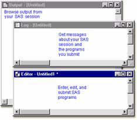
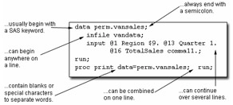
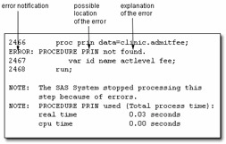

Overview
Introduction
Now that you're familiar with the basics, you can learn how to correct errors in your programs and resolve common problems effectively.
Objectives
In this chapter, you learn to
- enhance the readability of your SAS programs.
- interpret error messages in the SAS log.
- correct errors.
- resolve common problems.
SAS Program Layout
Before discussing how to edit and debug programs, let's review the characteristics of SAS statements and look at enhancing the readability of your SAS programs.
Remember that SAS programs consist of SAS statements.
SAS statements.....
Although you can write SAS statements in almost any format, a consistent layout enhances readability and helps you understand the program's purpose. It's a good idea to
- begin DATA and PROC steps in column one.
- indent statements within a step.
- begin RUN statements in column one.
- include a RUN statement after every DATA step or PROC step.
data work.bankacct;
infile records;
input Name $ 1-10 AccountType $ 12-20
Deposit 22-25 Withdrawal 27-30;
run;
proc print data=work.bankacct;
run;
proc means mean;
var deposit withdrawal;
run;
Interpreting Error Messages
Error Types
So far, the programs that you've seen in this book have been error free, but programming errors do occur. SAS can detect several types of errors. The most common are
- syntax errors that occur when program statements do not conform to the rules of the SAS language
- data errors that occur when some data values are not appropriate for the SAS statements that are specified in a program.
This chapter focuses on identifying and correcting syntax errors.
Syntax Errors
When you submit a program, SAS scans each step for syntax errors, then processes the step (if no syntax errors are found). SAS then goes to the next step and repeats the process. Syntax errors, such as misspelled words, generally cause SAS to stop processing the step in which the error occurred.
You already know that information is written to the SAS log while a SAS program is executing. When a program that contains an error is submitted, messages regarding the problem also appear in the SAS log. When a syntax error is detected, the SAS log
- displays the word ERROR.
- identifies the possible location of the error.
- gives an explanation of the error.
Example
The program below contains a syntax error. The DATA step copies the SAS data set Clinic.Admit into a new data set named Clinic.Admitfee. The PROC step should print the values for the variables ID, Name, Actlevel, and Fee in the new data set. However, print is misspelled in the PROC PRINT statement.
data clinic.admitfee;
set clinic.admit;
run;
proc prin data=clinic.admitfee;
var id name actlevel fee;
run;
When the program is submitted, messages in the SAS log indicate that the procedure PRIN was not found and that SAS stopped processing the PRINT step due to errors. No output is produced by the PRINT procedure, because the second step fails to execute.
| Warning | Problems with your statements or data might not be evident when you look at results. Therefore, it's important to review the messages in the log each time you submit a SAS program. |
|---|
Correcting Errors
To modify programs that contain errors, you can edit them in the Editor window. You can correct simple errors, such as the spelling error in the following program, by typing over the incorrect text, deleting text, or inserting text.
data clinic.admitfee;
set clinic.admit;
run;
proc prin data=clinic.admitfee;
var id name actlevel fee;
run;
In the program below, the missing t has been inserted into the PRINT keyword that is specified in the PROC PRINT statement.
data clinic.admitfee;
set clinic.admit;
run;
proc print data=clinic.admitfee;
var id name actlevel fee;
run;
Resubmitting a Revised Program
After correcting your program, you can submit it again.
Previously, because there was an error in the PRINT procedure, the code that contained the error did not produce output. This time, the PRINT procedure executes and produces output.
| Obs | ID | Name | ActLevel | Fee |
|---|---|---|---|---|
| 1 | 2458 | Murray, W | HIGH | 85.20 |
| 2 | 2462 | Almers, C | HIGH | 124.80 |
| 3 | 2501 | Bonaventure, T | LOW | 149.75 |
| 4 | 2523 | Johnson, R | MOD | 149.75 |
| 5 | 2539 | LaMance, K | LOW | 124.80 |
| 6 | 2544 | Jones, M | HIGH | 124.80 |
| 7 | 2552 | Reberson, P | MOD | 149.75 |
| 8 | 2555 | King, E | MOD | 149.75 |
| 9 | 2563 | Pitts, D | LOW | 124.80 |
| 10 | 2568 | Eberhardt, S | LOW | 124.80 |
| 11 | 2571 | Nunnelly, A | HIGH | 149.75 |
| 12 | 2572 | Oberon, M | LOW | 85.20 |
| 13 | 2574 | Peterson, V | MOD | 149.75 |
| 14 | 2575 | Quigley, M | HIGH | 124.80 |
| 15 | 2578 | Cameron, L | MOD | 124.80 |
| 16 | 2579 | Underwood, K | LOW | 149.75 |
| 17 | 2584 | Takahashi, Y | MOD | 124.80 |
| 18 | 2586 | Derber, B | HIGH | 85.20 |
| 19 | 2588 | Ivan, H | LOW | 85.20 |
| 20 | 2589 | Wilcox, E | HIGH | 149.75 |
| 21 | 2595 | Warren, C | MOD | 149.75 |
Remember to check the SAS log again to verify that your program ran correctly.
SAS Log
54 data clinic.: admitfee;
55 set clinic.admit;
56 run;
NOTE: The data set CLINIC.ADMITFEE has
21 observations and 9 variables.
NOTE: DATA statement used:
real time 0.09 seconds
cpu time 0.03 seconds
57 proc print data=clinic.admitfee;
58 var id name actlevel fee;
59 run;
NOTE: PROCEDURE PRINT used;
real time 1.78 seconds
cpu time 0.03 seconds
Resolving Common Problems
In addition to correcting spelling mistakes, you might need to resolve several other types of common syntax errors. These errors include
- omitting semicolons.
- leaving quotation marks unbalanced.
- specifying invalid options.
Another common problem is omitting a RUN statement at the end of a program. Although this is not technically an error, it can produce unexpected results. For the sake of convenience, we'll consider it together with syntax errors.
The table below lists these problems and their symptoms.
| Problem | Symptom |
|---|---|
| missing RUN statement | "PROC (or DATA) step running" at top of active window |
| missing semicolon | log message indicating an error in a statement that seems to be valid |
| unbalanced quotation marks | log message indicating that a text string enclosed in quotation marks has become too long or that a statement is ambiguous |
| invalid option | log message indicating that an option is invalid or not recognized |
Missing RUN Statement
Each step in a SAS program is compiled and executed independently from every other step. As a step is compiled, SAS recognizes the end of the current step when it encounte
- a DATA or PROC statement, which indicates the beginning of a new step.
- a RUN or QUIT statement, which indicates the end of the current step.
When the program below is submitted, the DATA step executes, but the PROC step does not. The PROC step does not execute because there is no following DATA or PROC step to indicate the beginning of a new step, nor is there a following RUN statement to indicate the end of the step.
data clinic.admitfee;
set clinic.admit;
run;
proc print data=clinic.admitfee;
var id name actlevel fee;
Resolving the Problem
To correct the error, submit a RUN statement to complete the PROC step.
run;
Missing Semicolon
One of the most common errors is the omission of a semicolon at the end of a statement. The program below is missing a semicolon at the end of the PROC PRINT statement.
data clinic.admitfee;
set clinic.admit;
run;
proc print data=clinic.admitfee
var id name actlevel fee;
run;
When you omit a semicolon, SAS reads the statement that lacks the semicolon, plus the following statement, as one long statement. The SAS log then lists errors that relate to the combined statement, not the actual mistake (the missing semicolon).
SAS Log
1832 proc print data: =clinic.admitfee
1833 var id name actlevel fee;
---
22
76
ERROR 22-322:Syntax error, expecting one of the following:
;, (, DATA, DOUBLE, HEADING, LABEL,
N, NOOBS, OBS, ROUND, ROWS, SPLIT, UNIFORM, WIDTH.
ERROR 76-322:Syntax error, statement will be ignored.
1834 run;
NOTE: The SAS System stopped processing this step
because of errors.
NOTE: PROCEDURE PRINT used:
real time 0.35 seconds
cpu time 0.03 seconds
Resolving the Problem
To correct the error, do the following:
- Find the statement that lacks a semicolon. You can usually locate the statement that lacks the semicolon by looking at the underscored keywords in the error message and working backwards.
- Add a semicolon in the appropriate location.
- Resubmit the corrected program.
- Check the SAS log again to make sure there are no other errors.
Unbalanced Quotation Marks
Some syntax errors, such as the missing quotation mark after HIGH in the program below, cause SAS to misinterpret the statements in your program.
data clinic.admitfee;
set clinic.admit;
where actlevel= 'HIGH;
run;
proc print data=clinic.admitfee;
var id name actlevel fee;
run;
When you have unbalanced quotation marks, SAS is often unable to detect the end of the statement in which the error occurs. When the program above is submitted, SAS is unable to resolve the DATA step, and a "DATA STEP running" message appears at the top of the active window.
In addition, when unbalanced quotation marks appear in a program that contains TITLE or FOOTNOTE statements, there is sometimes a warning in the SAS log which indicates that
- a text string enclosed in quotation marks has become too long.
- a statement that contains quotation marks (such as a TITLE or FOOTNOTE statement) is ambiguous due to invalid options or unquoted text.
SAS Log (PROC PRINT Running)
93 proc print data=clinic.admitfee; 94 var id name actlevel fee; 95 title 'Patient Billing; 96 title2 'January 1998'; WARNING: The TITLE statement is ambiguous due to invalid options or unquoted text. 97 run;
Simply adding a quotation mark and resubmitting your program usually does not solve the problem. SAS still considers the quotation marks to be unbalanced.
| Warning | If you do not resolve this problem when it occurs, it is likely that any subsequent programs that you submit in the current SAS session will generate errors. |
|---|
Resolving the Problem
| SAS Enterprise Guide | When you submit a program with unbalanced quotation
marks, you might not receive an error message. This is
because SAS Enterprise Guide automatically submits an
ending quotation mark for you. However, you will not get
valid results. Because there might be no visual indicator in the Project window that there is an error in your program, you should learn to detect this syntax error before you submit your program. The Code Editor window uses color coding to help you recognize errors. |
|---|
| SAS Windowing Environment | In the SAS windowing environment, you must cancel
the program before you recall, correct, and resubmit
the code. To submit a line of SAS code that cancels
the program, complete the following steps:
|
|---|
SAS Log
98 *';: run;
NOTE: There were 7 observations read from the data set
CLINIC.ADMITFEE.
NOTE: PROCEDURE PRINT used (Total process time):
real time 31.38 seconds
cpu time 1.21 seconds
99 proc print data=clinic.admitfee;
99 var id name actlevel fee;
100 title 'Patient Billing';
101 title2 'January 1998';
102 run;
NOTE: There were 7 observations read from the data set
CLINIC.ADMITFEE.
NOTE: PROCEDURE PRINT used (Total process time):
real time 0.16 seconds
cpu time 0.15 seconds
Invalid Option
An invalid option error occurs when you specify an option that is not valid in a particular statement. In the program below, the KEYLABEL option is not valid when used with the PROC PRINT statement.
data clinic.admitfee;
set clinic.admit;
run;
proc print data=clinic.admitfee keylabel;
label actlevel='Activity Level';
run;
When a SAS statement that contains an invalid option is submitted, a message appears in the SAS log indicating that there is a syntax error. The message lists the options that are valid in the statement.
SAS Log
12 proc print data: =clinic.admitfee keylabel;
22 200
ERROR 22-322: Syntax error, expecting one of the following: ;,
(,
N, NOOBS, OBS, ROUND, ROWS, SPLIT, STYLE,
UNIFORM,
ERROR 200-322: The symbol is not recognized and will be ignored.
13 label actlevel='Activity Level';
14 run;
NOTE: The SAS System stopped processing this step
because of errors.
NOTE: PROCEDURE PRINT used:
real time 0.23 seconds
cpu time 0.04 seconds
Resolving the Problem
To correct the error:
- Remove or replace the invalid option, and check your statement syntax as needed.
- Resubmit the corrected program.
- Check the SAS log again to make sure there are no other errors.
Additional Features
Comments in SAS Programs
You can insert comments into a SAS program to document the purpose of the program, to explain segments of the program, or to describe the steps in a complex program or calculation. A comment statement begins and ends with a comment symbol. There are two forms of comment statements:
*text;
or
/*text*/
SAS ignores text in comments during processing.
The following program shows some of the ways comments can be used to describe a SAS program.
/* Read national sales data for vans */
/* from an external raw data file */
data perm.vansales;
infile vandata;
input @1 Region $9.
@13 Quarter 1. /* Values are 1, 2, 3, or 4 */
@16 TotalSales comma11.;
/* Print the entire data set */
proc print data=perm.vansales;
run;
SAS System Options
SAS includes several system options that enable you to control error handling and SAS log messages. The table shown below contains brief descriptions of some of these options. You can use the OPTIONS statement to specify these options.
| Options | Description |
|---|---|
| ERRORS=n | Specifies the maximum number of observations for which complete data error messages are printed. |
| FMTERR | NOFMTERR | Controls whether SAS generates an error message when a format of a variable cannot be found. NOFMTERR results in a warning instead of an error. FMTERR is the default. |
| SOURCE | NOSOURCE | Controls whether SAS writes source statements to the SAS log. SOURCE is the default. |
Summary
Text Summary
SAS Program Layout
SAS programs consist of SAS statements. Although you can write SAS statements in almost any format, a consistent layout enhances readability and enables you to understand the program's purpose.
Interpreting Error Messages
When a SAS program that contains errors is submitted, error messages appear in the SAS log. SAS can detect several types of errors, including syntax and data errors. This chapter focuses on identifying and resolving common syntax errors.
Correcting Errors
To modify a program that contains syntax errors, you can correct the errors in the Editor window and then resubmit the revised program. You can delete any error-free steps from a revised program before resubmitting it.
Detecting and Resolving Common Problems
You might need to resolve several types of common problems: missing RUN statements, missing semicolons, unbalanced quotation marks, and invalid options.
Points to Remember
- It's a good idea to begin DATA steps, PROC steps, and RUN statements on the left and to indent statements within a step.
- End each step with a RUN statement.
- Review the messages in the SAS log each time you submit a SAS program.